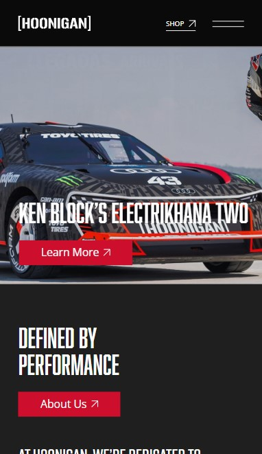

Contrast
CrunchLabs
CrunchLabsThe CrunchLabs webpage is a great example of contrast for many reasons. There is a stark contrast bewteen the vibrant primary colors of the text and graphic elements. There is clear contrast in the font size and images. There's contrast in the typography, imagery, background, etc. This webpage was created with contrast in mind. I beleive it perfectly demonstrates the design principle of contrast in many ways.
Rule of Thirds
Apple
AppleI believe that the Apple website clearly demonstrates the rule of thirds design principle. The rule of thirds can mainly be seen in the top section of their website home page. The screenshot provided shows the middle vertical column of the three columns that make up the thirds. The subject in the header image, the top navigation menu, and the iphone 15 pro text draw your eyes to the center column while the outer columns have less going on.
Visual Hierarchy
Hoonigan
Hoonigan I believe that the Hoonigan webpage is a perfect example of visual hierarchy. This webpage uses large bold text for the headlines and smaller text for additional information which creates a clear visual hierarchy. This hierarchy guides the viewer's eye to focus on the most important elements of the webpage first. The webpage was large so it was difficult to grab a visual example that demonstrates visual hierarchy, but the provided link above will take you to their page where you can see this design principle demonstrated.